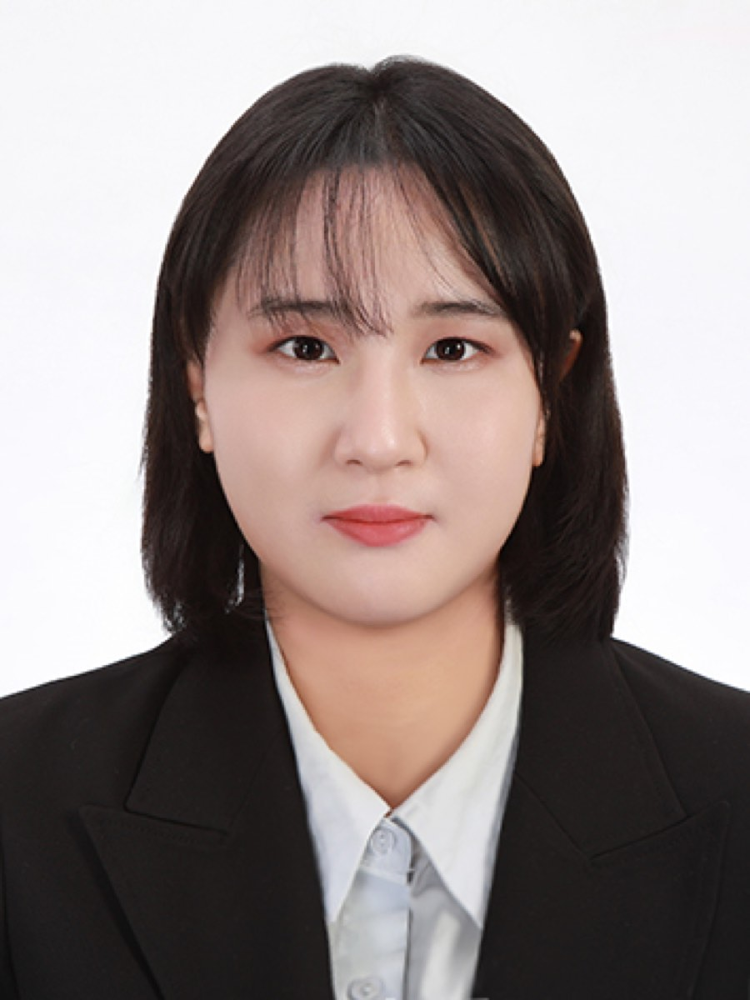
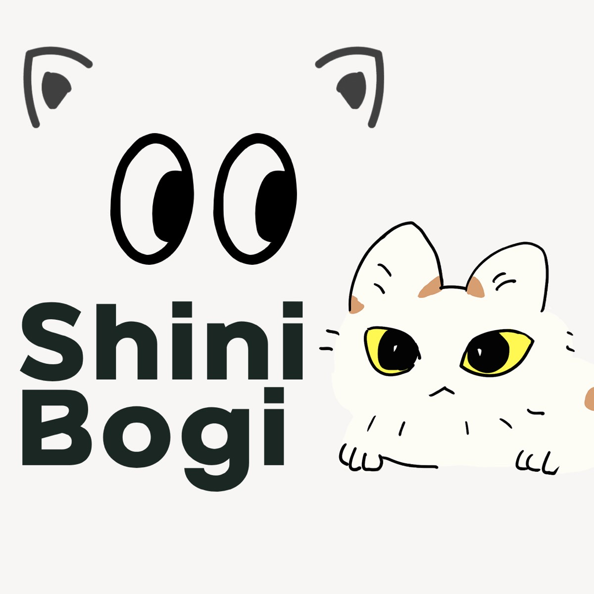

콘텐츠 기획·제작
브랜드·대상 분석부터 인터뷰·촬영·편집·디자인까지 수행합니다.

도봉구청 SNS 크루와 개인 유튜브 편집, 블로그 운영을 통해 촬영·편집·디자인 경험을 쌓았습니다.
브랜드와 대상을 이해하고 카드뉴스·영상·블로그 콘텐츠로 표현합니다. AI 활용과 디지털 마케팅 지식을 더해 브랜드의 가치를 전달하고자 합니다.
K-POP을 좋아하면서 DSLR로 찍은 사진을 직접 보정해 SNS에 올리기 시작했습니다.
영어와 일본어를 공부하고 해외 시청자를 위한 유튜브 채널을 운영하면서, 제가 만든 영상을 사람들과 나누는 즐거움을 느껴 콘텐츠 제작을 제 일로 삼고 싶어졌습니다.
학습·실행 · 필요한 기능을 직접 배우고 수정하며 완성합니다.
일정 관리 · 중요도·마감일로 우선순위를 정하고, 도구에 기록해 제작 단계별 진행 상황을 확인합니다.
유튜브 편집과 인트로 제작, 3D 작업 연습을 이어 왔습니다. 고양이 제품 블로그와 지역 맛집 영상을 제작하며 검색 키워드·시청 시간대·AI 콘텐츠 반응을 배웠습니다.
브랜드·대상 분석부터 인터뷰·촬영·편집·디자인까지 수행합니다.
AI로 분석·문서 작성·이미지 편집을 돕고, 목적에 맞는 디자인·영상 도구를 활용합니다.
시안·샘플로 방향을 조율하고, 일정과 장비에 맞춰 준비·제작합니다.

고양이 제품 리뷰와 일상, 지역 맛집 등 직접 경험한 내용을 글과 사진으로 전달합니다.
블로그 방문하기전체 · 3개 프로젝트
20~30대 여성 고객층 확대를 위한 블로그·인스타그램 콘텐츠 제작
카드뉴스 · 크리스마스 양말 추천
기관·행사·복지 정보를 알리는 홍보 영상 19편 제작
3인 팀으로 제작 기간 한 달 안에 10분 분량의 다큐멘터리 1편 완성
로고·타이틀 디자인 · 6개
카드 위에서 아래로 스크롤하면
다음 작품이 가로로 이어집니다.
작업물을 누르면 크게 볼 수 있어요.
Blender 3D 작업 · 4개
카드 위에서 아래로 스크롤하면
다음 작품이 가로로 이어집니다.
작업물을 누르면 크게 볼 수 있어요.
아래 제목을 눌러 영상을 선택하고,
재생 버튼으로 인트로를 감상하세요.
전체 · 11개 도구
브랜드 분석·제안서 작성·내용 정리·양말 이미지 편집
AI 영상 제작
인물 사진 보정, 카드뉴스·썸네일·로고 등 그래픽 제작
로고 제작
홍보 영상·릴스·다큐멘터리 편집
인트로와 영상 효과 제작
앱 내 이미지·텍스트 수정 가능 여부 확인
카드뉴스 디자인
3D 작업 연습
사진·영상 촬영